In 2003, Stephenie Meyer was searching for an appropriate location for her novel about vampires. She would call it “Twilight.” Not having time to visit every recommendation, she was intrigued by what she saw in a map search about Forks, a tiny logging town on Washington state’s Olympic Peninsula, with supposedly the most rain and darkest forest in the USA. Within two years, Forks was one of the most famous small towns in America, the home of Bella Swan and Edward Cullen, thanks to books and five movies about the compelling and dangerous characters of the Twilight series. She had no idea that her choice would save the town of Forks, which she had never seen, from a financial crisis.
Because of its location adjacent to the Olympic Peninsula’s Old Growth forests, Forks was a timber success story. The majestic Douglas fir and Sitka spruce up to 300 feet high were pure lumber gold. For years, timber companies had extracted 20,000 to 90,000 board feet of spruce and fir from a single tree. Environmental concerns had always lurked in the background. The central Old Growth forests were protected by the establishment of the Olympic National Park in 1938, but as a bitter battle to save other Old Growth ecosystems and label the charming Northern Spotted Owl as endangered became a national cause in the 1980s and 1990s, logging ground to a virtual halt. Eventually approximately one million acres of Old Growth forests and the Spotted Owl were protected by the creation of the Northwest Forest Plan of 1984. Logging is still allowed only in the surrounding area identified as the Olympic National Forest, and only through a carefully managed process of harvesting and replanting.
As described in Pulitzer Prize winning journalist William Dietrich’s “The Final Forest,” the town of Forks slowly and painfully shrunk. Logging jobs vanished; families struggled. Then a seeming miracle happened. The success of the Twilight franchise began to turn Forks into a boom town once again. By 2005 Forks was a tourist magnet. Twilight souvenirs and attractions filled the stores. Even today, as the 5-film Twilight brand matures, there are annual Twight Festivals, and families enjoy the frisson of fictitious vampires lurking in the forest.
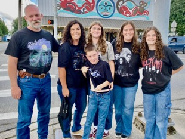
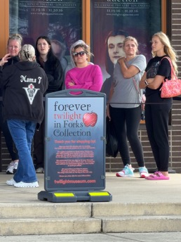
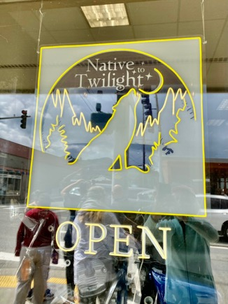
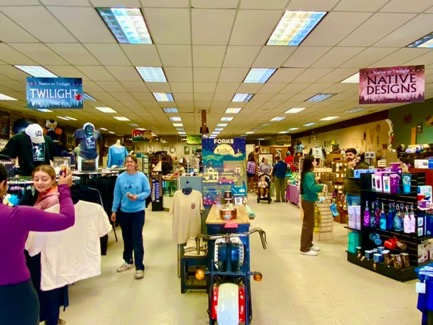
For those of us more interested in trees than vampires, Forks near the entrance to the Hoh River Valley and road to the rain forest visitor center remains a popular destination. The Olympic National Park and surrounding National Forest attracts 3.5 to 3.7 million visitors a year for hiking, camping, and marveling at the huge moss-covered trees of America’s last temperate rain forest and the snow-covered peaks of the Olympic range.
I had heard about the mysterious and dramatic Olympic Peninsula for many years. It’s close to our home on Blakely Island in the San Juans, but we had never been there. Reconnecting with friends in the peninsula’s Port Townsend, we had a good reason to make the trip, an hour’s drive and a 30-minute ferry ride away.
Port Townsend itself is definitely worth a visit. One of the early 19th century settlements by Europeans in the Pacific Northwest, the town was hoped by residents to become the primary northwestern city in America, thanks to initial mining success and the coming railroad. Investment flowed. A building boom created significant public buildings, churches, and grand Victorian houses. Smart money bet on its future success. Except the smart money was wrong. The mines gave out, the railroad didn’t materialize as hoped and Seattle would be the eventual winner. Following years of decline, Port Townsend has now attracted residents who value the location and history; today many of the remaining Victorian buildings and homes have been restored. Port Townsend is today a vibrant arts community and shopping destination.
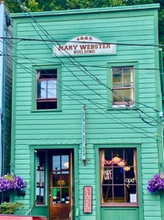
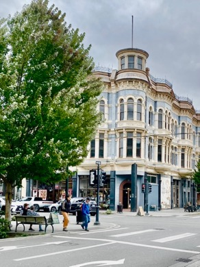
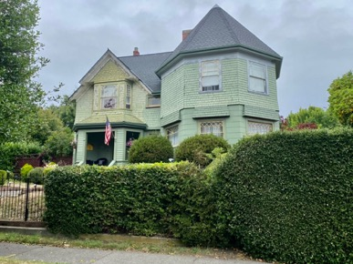
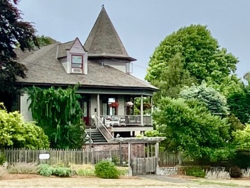
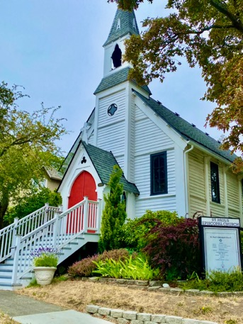
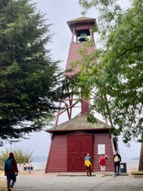
Perhaps the most significant cultural feature of Port Townsend is Centrum, a nonprofit arts organization using the former facilities of Fort Worden, now Fort Worden State Park. Centrum encompasses everything from public performances and workshops to artists residencies in performing and visual arts; throughout the summer such events as the Festival of American Fiddle Tunes and the Ukelele Festival draw crowds. We attended an evening at the Blues Festival.
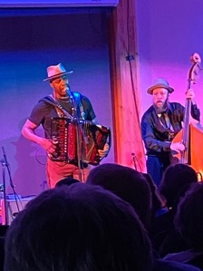
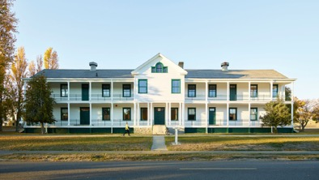
From the Victorian charm of Port Townsend, we headed to Route 101 that encircles the entire Olympic peninsula. Forks is about a two-hour drive from Port Townsend. The road goes past the larger Port Angeles where one can take a ferry to Victoria, British Columbia, then skirts the beautiful Lake Crescent, over 620 feet deep.
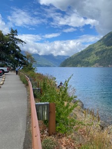
Our destination was 30 minutes past Forks, the Hoh River visitor center and one of several entrances to the Olympic State Park (again, distinct from the Forest). We took a winding forest road through an ever-denser forest and began to notice moss on trees as we approached the park entrance.
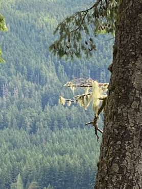
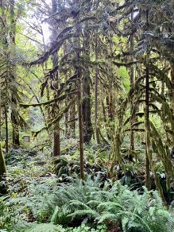
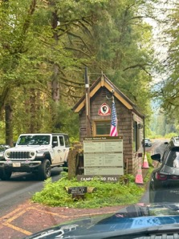
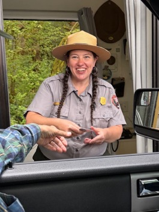
We not only had to wait to get our ticket, but we also had a difficult time finding parking, even though visitors continued to be admitted. All “legal” spots near the Hoh Visitor Center were already taken. We had not noticed the sign on the entrance that read “campground full.” We finally tucked into a semi-legal spot suggested by a park ranger, near a truly astonishing stump.
One can barely imagine the thrill… and fear… among loggers faced with this monster!
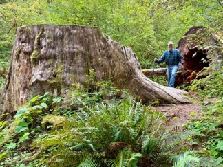
The modest visitors center provided a helpful overview of the flora and fauna of a series of trails. We chose the .8-mile Moss Trail. Taking us between two huge easily 250-foot-tall giants, we followed the rocky path through dramatic stands of towering fir and spruce and then an amazing grove of ancient maples with a canopy of moss.
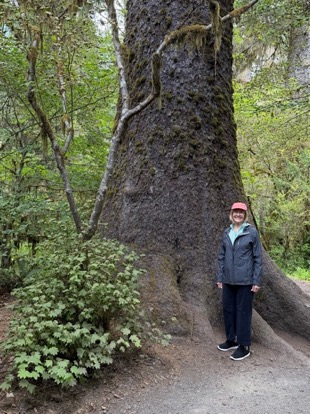
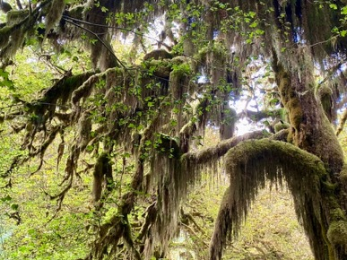
Leaving the park, we again saw a long line to buy tickets. We realized that arriving first thing in the morning was the better plan.
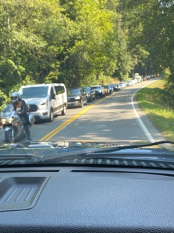
Driving back to Forks to spend the night, we found the Timber Museum, honoring the origins of the town over a hundred years ago. A shed displayed traditional logging equipment designed to handle huge trees. As logging was restricted to smaller, second growth trees, lumber companies had to retool their equipment to handle narrower logs.
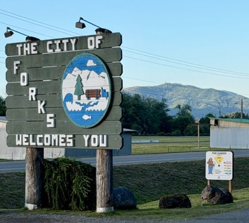
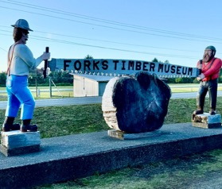
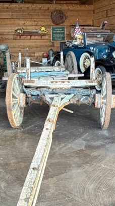
Despite the tourists, we were able to find a motel room in Forks, the last room available in the Far West Motel. It was totally adequate and looked as if it had very recently been renovated. The main street in Forks had roughly ten motels, catering to vampire seekers and tree huggers alike.
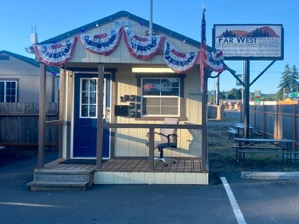
The next day we headed to another entrance to the park, en route back to the Port Townsend ferry. This was the so-called Hurricane Ridge in the Olympic mountain range which had been invisible in the rain forest although it is the central feature of the peninsula. We left early in the morning to try to avoid the anticipated crowds. We got up to the ticket booth quickly, but again parking was impossible. We never found a place to park; I was able to take some pictures from the roadside. The visitors center had burned down in 2023 and reconstruction was underway. The ridge road was about a mile and a half long with hiking trails off to the side. The views were spectacular both from the ridge and heading down. We were at the edge of the timber line and the steepness of the mountains made it obvious why these highest peaks had not been clearcut in the early days.
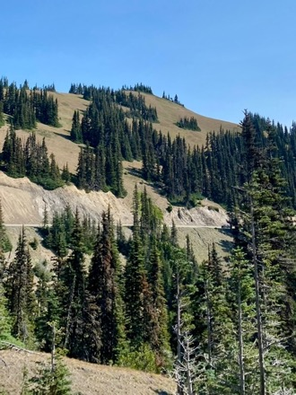
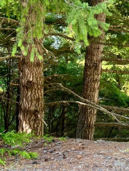
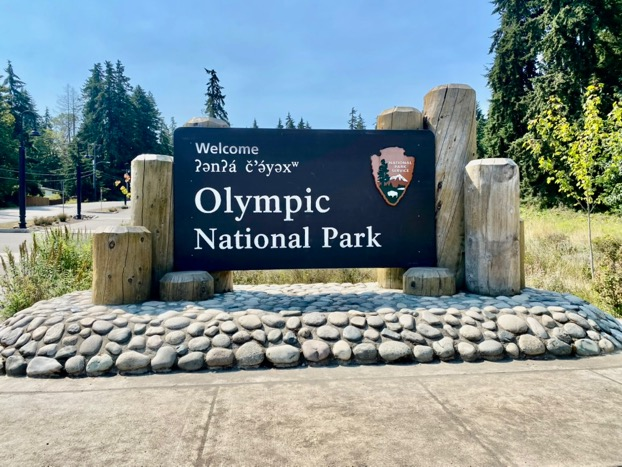
Back to the park entrance (separate from the ticket window by several miles) near Port Angeles and on to the Port Townsend ferry for the trip back to Blakely. We had enjoyed a whirlwind four days and were happy to see the Blakely marina greeting us. And the vampires? We’ll have to spend more time in Forks next time. Maybe we’ll meet one.
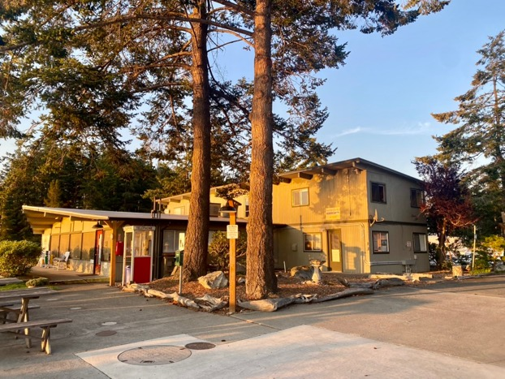